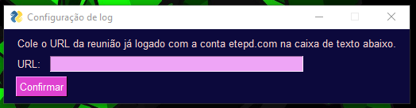
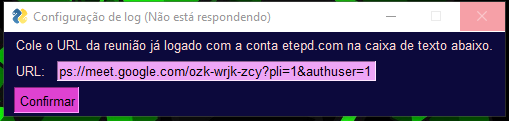
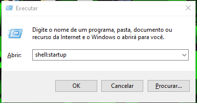

Como qualquer programa, o M-bot também tem bugs e alguns erros. Nesse arquivo, você poderá encontrar alguns dos erros mais evidentes e mais comuns e como resolve-los. Também ensinamos como fazer o programa iniciar junto com o windows.
Como qualquer programa, o M-bot também tem bugs e alguns erros. Nesse arquivo, você poderá encontrar alguns dos erros mais evidentes e mais comuns e como resolve-los. Também ensinamos como fazer o programa iniciar junto com o windows.
Quando você inicializar o programa pela primeira vez, caso seja horas, minutos ou segundos antes da aula a inteface irá ficar sem responder apôs clicar em "Confirmar" até a hora da aula começar. Não descobrimos o porque, mas provavelmente seja que o código de interface esteja intimamente envolvido com o horario da aula.
 Para resolver isso, você pode fechar a inteface(irá fechar junto com o programa, então não precisa se preucupar com o ele rodando em segundo plano), ir na pasta em que ele está e verificar se criou um arquivo chamado "log.txt". Caso não tenha sido criado, você poderá criar o arquivo(com o mesmo nome e extenção) na mesma pasta.
Neste arquivo de texto, você deve verificar se está escrito o link da reunião já logado com a conta etepd.com no Google Meet. Caso não esteja, apenas copie e cole no arquivo.
Para o programa iniciar com o Windows você precisa arrastar um atalho do programa(ou o proprio programa) para a pasta "Inicializar" no seguinte diretorio:
C:\Users\NOME DE USUARIO\AppData\Roaming\Microsoft\Windows\Start Menu\Programs\Startup
Você também pode apertar o botão do "Windows" + "R", escrever "shell:startup" e
O programa irá iniciar toda vez que você ligar o computador/notebook. E ficará verificando a cada 120 segundos se já deu a hora da aula, isso consome sim memoria, CPU e até energia em quantidades concideraveis para notebooks que não são um pouco mais "fortes".
Em dias de sábado e domingo ele irá iniciar e fechar no tempo seguinte.
Para mais informações